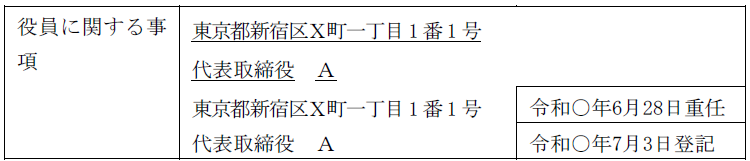
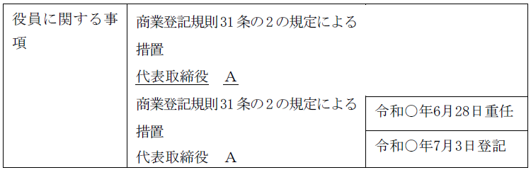
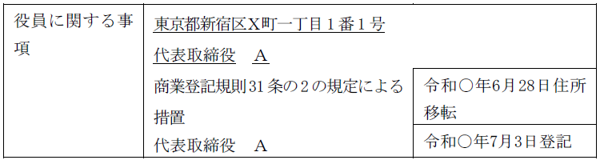
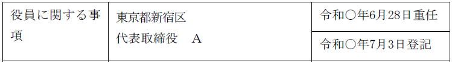
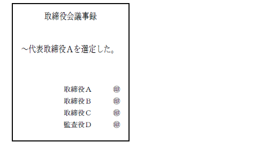
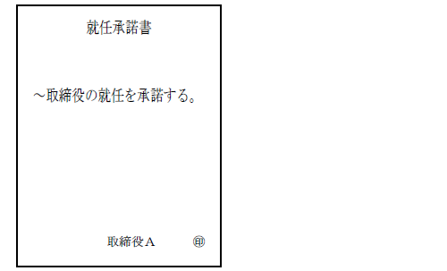
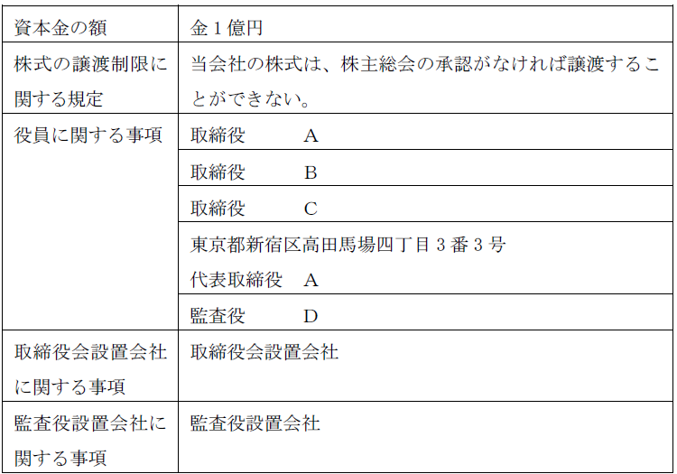
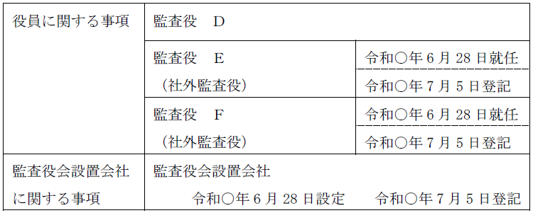

第２編 株式会社
第２章 機関
第７節 機関に関する登記
Ⅲ 代表取締役に関する規定
1. 代表取締役の登記事項
(1) 原則
株式会社の代表取締役については、氏名及び住所が登記事項である。住所が登記事項となるのは、代表者を特定するための情報として必要だからである。
(2) ＤＶ等の被害者の申出に基づく住所非表示措置（商登規31条の2）
株式会社の代表者がＤＶ等の被害者であるような場合には、誰でも入手できる登記事項証明書において住所を公開するのは好ましくない。そこで、会社の代表者から申出があり、その申出を相当と認めるときは、登記官は、その代表者の住所を登記事項証明書に表示しない措置を講ずることができる（商登規31条の2第1項）。
住所非表示措置申出（商登規31条の2）が講じられることとなるものについては、電子通信回線を使用して提供することに適しない情報とされている（電気通信回線による登記情報の提供に関する法律施行規則1条1項2号の2）。
(a) 申出の方法
住所の非表示の申出は、次に掲げる事項を内容とする申出書を登記所に提出してしなければならない（商登規31条の2第2項各号）。
ⅰ 登記の種類に応じた事項（商登規31条の2第2項第1号参照）
申出が会社の登記に係るものである場合、商号及び本店の所在場所を内容としなければならない。
ⅱ 申出人の資格、氏名又は名称、住所及び連絡先（2号）
ⅲ 被害者等の資格、氏名、住所及び連絡先（3号）
ⅳ 代理人による申出の場合には、当該代理人の氏名又は名称、住所及び連絡先並びに代理人が法人であるときはその代表者の資格及び氏名（4号）
ⅴ 住所非表示措置を希望する旨及びその理由（5号）
ⅵ 申出の年月日（6号）
(b) 登記の申請と同時に申出をする場合
登記の申請と同時に申出をする場合には、前記（a）ⅱ、ⅲ及びⅴの事項を当該登記の申請書に記載しなければならない（商登規31条の2第3項）。
(c) 添付書面（商登規31条の2第4項）
ⅰ 住所が明らかにされることにより被害を受けるおそれがあることを証する書面（1号）
ⅱ 申出書等に記載されている被害者等の氏名及び住所が記載されている市町村長その他の公務員が職務上作成した証明書（申出人が原本と相違がない旨を記載した謄本を含む。）（2号）
ⅲ 代理人によって申出書又は登記申請書を登記所に提出するときは、当該代理人の権限を証する書面（3号）
【商登規31条の2の申出がされた場合の登記事項証明書のイメージ】
（非表示の申出前）

（非表示の申出後）

（住所変更の登記と同時に新住所につき住所非表示の申出をした場合）

(3) 代表取締役等住所非表示措置（商登規31条の3）
代表取締役等の就任等の登記を申請する者は、当該登記により登記簿に住所を記録すべき代表取締役、代表執行役又は代表清算人（以下「代表取締役等」という。）の住所が記録される登記簿に係る登記事項証明書又は登記事項要約書に、当該住所につき行政区画以外のものを記載しない措置（以下「代表取締役等住所非表示措置」という。）を講ずるよう申し出ることができる（商登規31条の3第1項前段）。登記官は、当該申出が適当と認めるときは、代表取締役等住所非表示措置を講ずる（商登規31条の3第2項）。
(a) 要件
ⅰ 登記申請と同時に申し出ること
以下の登記申請と同時に申出をする。
株式会社の設立の登記、本店を他の登記所の管轄区域内に移転した場合の新所在地における登記、代表取締役若しくは代表執行役の就任若しくは住所変更による変更の登記、清算人の登記又は代表清算人の就任若しくは住所変更による変更の登記
ⅱ 所定の書面を添付すること（後記(b)参照）
(b) 添付書面（商登規31条の3第1項各号）
ⅰ 上場会社以外の株式会社（代表取締役等住所非表示措置が講じられていない株式会社に限る。）（同項第1号イ、ロ、ハ）
①次のいずれかの書面
・登記の申請がその代理を業とすることができる代理人（以下「資格者代理人」という。）によってされた場合において当該資格者代理人が当該株式会社の本店がその所在場所において実在することを確認した結果を記載した書面
・株式会社が受取人として記載された書面がその本店の所在場所に宛てて配達証明郵便により送付されたことを証する書面等
②代表取締役等の氏名及び住所と同一の氏名及び住所が記載されている市町村長その他の公務員が職務上作成した証明書（当該代表取締役等が原本と相違ない旨を記載した謄本を含む。以下この条において同じ。）
住民票の写しなどを添付する。もっとも、②の証明書を登記の添付書面として添付した場合には、重ねて添付しなくてよい。
③株式会社の実質的支配者の本人特定事項を証する書面（ex.資格者代理人の法令に基づく確認の結果を記載した書面など）
ⅱ 上場会社以外の株式会社（既に代表取締役等住所非表示措置が講じられている株式会社に限る。）（同項第2号）
上記ⅰ②の証明書のみで足りる。
ⅲ 上場会社（代表取締役等住所非表示措置が講じられていない株式会社に限る。※）（同項第3号）
・金融商品取引所に当該株式会社の株式が上場されていることを認めるに足りる書面
※既に当該措置が講じられている場合は添付不要
【代表取締役等住所非表示措置がされた場合の登記事項証明書のイメージ】

(c) 住所非表示措置の継続（商登規31条の3第3項）
代表取締役等住所非表示措置が講じられている株式会社の登記の申請がなされ、代表取締役等住所非表示措置が講じられている代表取締役等の住所と同一のものを登記するときは、登記官は、当該代表取締役等の住所につき、引き続き代表取締役等住所非表示措置を講ずる（商登規31条の3第3項）。
(d) 住所非表示措置の終了（商登規31条の3第4項）
登記官は、住所非表示措置が講じられた会社から代表取締役等住所非表示措置を希望しない旨の申出があったときや、住所非表示措置が講じられた株式会社の本店がその所在場所において実在すると認められないとき等には、代表取締役等住所非表示措置を終了させる（商登規31条の3第4項）。
2. 代表取締役の就任
代表取締役に選定できる者は、①取締役、②権利義務取締役、③仮取締役である。
【申請例14 代表取締役の変更 代表取締役の就任（取締役会設置会社）】
事例： 令和○年6月28日、取締役Ａ、取締役Ｂ、取締役Ｃ、代表取締役Ａとする株式会社の取締役会において、取締役Ｂ（住所：東京都新宿区百人町二丁目24番30号）が代表取締役に選定され、Ｂは、席上、就任を承諾した。なお、取締役会議事録には、代表取締役Ａの登記所届出印が押されており、当該株式会社の資本金の額は、2億円である。
(1) 申請書の内容
①登記の事由
「代表取締役の変更」と記載する。
②登記すべき事項
「年月日次の者就任 甲市乙区海原町1番地 代表取締役Ａ」等と記載する。年月日は、就任承諾の日を記載する。代表取締役は住所も登記する。
③添付書面
ⅰ 代表取締役の選定を証する書面
(ⅰ)株主総会議事録及び株主の氏名又は名称、住所及び議決権数等を証する書面（株主リスト）（商登規61条3項）
取締役会非設置会社において、定款で代表取締役を定めた場合に必要となる。
(ⅱ)定款及び取締役の互選を証する書面
取締役会非設置会社において、定款に基づく互選により代表取締役を定めた場合に必要となる。
(ⅲ)株主総会議事録及び株主の氏名又は名称、住所及び議決権数等を証する書面（株主リスト）（商登規61条3項）
取締役会非設置会社において、株主総会の決議で代表取締役を定めた場合に必要となる。
(ⅳ)取締役会議事録
取締役会設置会社において、取締役会で代表取締役を選定した場合に必要となる。
ⅱ 就任承諾書（商登法54条1項）
定款に基づく互選により代表取締役を定めた場合、及び、取締役会設置会社の場合に添付する。これらの場合は、代表取締役としての就任承諾が要求されるからである。
取締役と同様、要件を満たせば議事録の記載の援用ができる。この場合には、「就任承諾書は取締役会議事録（株主総会議事録）の記載を援用する」等と記載する。
ⅲ 印鑑証明書（市区町村長が作成したもの）
下記3．を参照
ⅳ 委任状
④登録免許税
申請件数1件につき、3万円（資本金の額が1億円以下の株式会社については、1万円）（登免法別表1.24(1)カ）。
3. 印鑑証明書の添付の要否
(1) 選定を証する書面に押印した印鑑についての証明書（商登規61条6項）
代表取締役又は代表執行役の就任による変更の登記の申請書には、次のⅰからⅲの区分に応じ、それぞれの印鑑につき市区町村長の作成した証明書を添付しなければならない（商登規61条6項本文）。
ⅰ 株主総会又は種類株主総会の決議によって代表取締役を定めた場合
議長及び出席した取締役が株主総会又は種類株主総会の議事録に押印した印鑑
ⅱ 取締役の互選によって代表取締役を定めた場合
取締役がその互選を証する書面に押印した印鑑
ⅲ 取締役会の決議によって代表取締役又は代表執行役を選定した場合
出席した取締役及び監査役が取締役会の議事録に押印した印鑑
(a) 趣旨
代表者の交替に関する議事録等の真正の担保、虚偽の代表者の就任登記による株式会社の乗っ取りを防止するための規定である。
(b) 例外
ⅰ 「設立」登記の場合
まだ存在しない会社を乗っ取ることは考えにくいため、設立の際には添付を要しない。

ⅱ 変更前の代表者の押印がある場合
変更前の代表取締役又は代表執行役（取締役を兼ねる者に限る）が、登記所に提出している印鑑で議事録等に押印した場合には、添付する必要がない（商登規61条6項ただし書）。
① 全ての代表者が登記所に印鑑を提出していない会社の場合には、上記の例外はなく、必ず選定議事録に押印した印鑑に関する証明書の添付が必要となることになる。
② 登記所に提出している印鑑とは、当該登記の申請時において提出されている印鑑であり、議事録等の作成時に提出している印鑑ではない（平10.2.10民4.270）。
③ 変更前の代表取締役等が、権限をもって取締役会等に出席し、自ら押印している必要がある。
Ex1．代表取締役であったＡが監査役に選任され、新代表取締役を選定する取締役会に監査役として出席し、登記所に提出している印鑑で取締役会議事録に押印した場合、監査役は取締役会に出席する権利及び義務があるため、商登規則61条6項の印鑑証明書の添付は不要となる（登研370P.75）。
Ex2．代表取締役に選定されたＡが、その選定に係る取締役会議事録に、前任の代表取締役Ｂが登記所に提出している印鑑と同一の印鑑を用いて押印しても、商登規則61条6項の印鑑証明書の添付を省略できない。変更前の代表取締役Ｂ自身が押印していないからである。
④ 支配人が代表取締役の選定に係る取締役会議事録に、支配人として登記所に提出していた印鑑と同一の印鑑を用いて押印しても 、商登規則61条6項の印鑑証明書の添付を省略できない。代表取締役として印鑑を提出していた者ではないからである。
(2) 就任承諾書に押印した印鑑についての証明書（商登規61条4項、5項）
代表取締役等（取締役会非設置会社は「取締役」）の就任を承諾したことを証する書面の印鑑につき市区町村長の作成した証明書を添付しなければならない（商登規61条4項、5項）。
具体的には、取締役会設置の有無・申請する登記の内容に応じてそれぞれの印鑑証明書を添付しなければならない。
| 申請する登記 | 添付する印鑑証明書 | |
| 取締役会設置会社 | 代表取締役又は代表執行役の就任（再任を除く。）による変更の登記 | 代表取締役又は代表執行役の就任承諾書に押印した印鑑の印鑑証明書 |
| 設立（合併及び組織変更による設立を除く。）の登記 | 設立時代表取締役又は設立時代表執行役の就任承諾書に押印した印鑑の印鑑証明書 | |
| 取締役会非設置会社 | 取締役の就任（再任を除く。）による変更の登記 | 取締役の就任承諾書に押印した印鑑の印鑑証明書 |
| 設立（合併及び組織変更による設立を除く。）の登記 | 設立時取締役の就任承諾書に押印した印鑑の印鑑証明書 |
(a) 趣旨
就任承諾書の真正の担保、就任意思の確認、代表取締役（取締役）が実在する人物であることの保証、他人名義を冒用した虚偽の就任登記の防止が目的である。
6項の印鑑証明書と異なり、設立時にも添付が必要である。

(b) 例外
以下の場合には、添付不要となる。
ⅰ 再任の場合
ⅱ 新設合併及び組織変更による設立の場合
※外国人の場合
外国人の場合は、印鑑証明書の代わりに、署名し、その署名が本人のものであることを証する書面として本国官憲の作成した証明書（署名証明書）を添付することができる（昭48.1.29民4.821）。また、外国人であっても、市町村長の発行した印鑑証明書を添付することもできる。
外国人が取締役として取締役会議事録に署名しているときは、当該署名が本人のものであることを証する書面として本国官憲の作成した証明書等を添付することを要する（平28.6.28民商.100、平29.2.10民商.15、16）。
1. 代表取締役の退任等
(1) 取締役の地位を失ったとき
代表取締役は、取締役であることを要するので、取締役の地位を喪失（ex. 辞任）した場合には、代表取締役としても資格喪失により退任する。もっとも、以下のように、権利義務の有無によって申請する登記が異なることになる。
代表取締役と権利義務
| 権利義務の有無 | 申請する登記 |
| ａ 取締役の権利義務あり＋代取の員数を欠く | なし（どちらも権利義務） |
| ｂ 取締役の権利義務あり＋代取の員数を欠かない | 代取の資格喪失による退任 |
| ｃ 取締役の権利義務なし＋代取の員数を欠く | 取締役の辞任、代取の資格喪失による退任 |
| ｄ 取締役の権利義務なし＋代取の員数を欠かない | 取締役の辞任、代取の資格喪失による退任 |
【申請例15 代表取締役の変更 代表取締役の退任（取締役の辞任）】
事例： 令和○年6月28日、取締役会設置会社である株式会社に対して、登記所に印鑑を提出している代表取締役たる取締役Ｂから辞任届が提出された。辞任届には、登記所に提出した印鑑が押されていない。この辞任により、法定及び定款の取締役及び代表取締役の員数を欠くことはない。なお、当該株式会社の資本金の額は、金2億円である。
(2) 権利義務取締役が代表取締役に選定されたとき
権利義務取締役が代表取締役に選定された後に、員数に足りる取締役・代表取締役の就任があった場合、権利義務取締役の代表取締役としての退任年月日は、取締役の権利義務承継者の地位を失った日である（死亡について昭39.10.3民甲3197）。
【申請例16 代表取締役の変更 権利義務取締役から選定された代表取締役の死亡】
事例： 令和○年6月1日、同年5月31日までに開催されるべき定時株主総会が開催されず、権利義務取締役となっているＡは取締役会において代表取締役に選定され、席上、被選定者は、就任を承諾した。そして、その旨の登記が令和○年6月2日にされた。令和○年6月27日、Ａは死亡し、死亡届が親族から提出された。令和○年6月28日、役員3名が出席した取締役会において、取締役Ｂ（住所：東京都新宿区大久保二丁目24番30号）が、代表取締役に選定され、同日、就任承諾書が提出された。なお、当該株式会社の資本金の額は、金2億円である。
(3) 代表取締役の住所等に変更があったとき
【申請例17 代表取締役の住所変更】
事例： 代表取締役であるＡは、令和○年1月20日に、登記されている住所から、東京都新宿区高田馬場四丁目3番6号に転居した。当該株式会社の資本金の額は、金2億円である。
(4) 申請書の内容
(a) 登記の事由
「代表取締役の変更」「代表取締役の住所変更」等と記載する。
(b) 登記すべき事項
【取締役の任期の満了、辞任、解任、資格喪失、破産手続開始決定により退任する場合】
「年月日代表取締役Ａ（資格喪失により）退任」等と記載する。
【死亡した場合】
「年月日代表取締役である取締役Ａ死亡」等と記載する。
(c) 添付書面
①退任を証する書面
【辞任の場合】
辞任届
代表取締役たる取締役が、取締役を辞任したとき又は代表取締役のみ辞任したときに必要となる。
※印鑑証明書（市区町村長が作成したもの）
【登記所に印鑑を提出している代表者等がいる場合】
登記所に印鑑を提出している以下の者の辞任の登記をする場合には、市区町村に届け出た個人の実印で押印し、印鑑証明書を添付する必要がある（商登規61条8項本文）。
①代表取締役の辞任登記
②代表執行役の辞任登記
③代表取締役である取締役の辞任登記（必ず代表取締役につき退任の登記もする）
④代表執行役である執行役の辞任登記（必ず代表執行役につき退任の登記もする）
※添付が不要となる場合
辞任を証する書面に登記所届出印で押印した場合は、印鑑証明書の添付は不要となる（商登規61条8項ただし書）。
登記所届出印は印鑑を提出した代表取締役の管理下にあるため、他の者が勝手に使用することは困難であると考えられる。
【全ての代表者が印鑑を提出していない場合】
代表者等が辞任した場合には、辞任届に市区町村に届け出た個人の実印を押印し、印鑑証明書を添付しなければならない。
【解任の場合】
ⅰ 取締役会議事録
代表取締役を取締役会で解職したときに必要となる。
ⅱ 株主総会議事録及び株主の氏名又は名称、住所及び議決権数等を証する書面（株主リスト）（商登規61条3項）
取締役を解任したとき、取締役会非設置会社の場合に株主総会又は定款の定めにより選定された代表取締役を解職したときに必要となる。
ⅲ 定款及び取締役による代表取締役の解職の決定を証する書面
定款の定めに基づく取締役の互選により選定された代表取締役を取締役の過半数の一致により解職した時に必要となる。
②委任状
(d) 登録免許税
申請件数1件につき、3万円（資本金の額が1億円以下の株式会社については、1万円）（登免法別表1.24(1)カ）。
2. 代表権付与の登記
代表取締役が欠けたり、代表取締役の選び方を変更したり、取締役会を設置したり廃止したりした場合に、取締役・代表取締役の地位はどうなるか、どのような登記手続をすべきかが、明文規定がないため問題となる。
もっとも、次の場合には、『代表権付与』の登記の申請を要する。
| ① 取締役会設置会社が取締役会を廃止し、各自代表となるとき |
| ② 取締役会非設置会社が代表取締役を定めないこととしたとき |
| ③ 取締役会非設置会社が取締役の中から代表取締役を定めた後、当該代表取締役が欠け、定款に「当会社は取締役2名以内を置き、取締役の互選により代表取締役1名を置く」等と定めていた場合 →この場合、代表権が法律上当然に回復するわけではないが、当該定款の定めに従って、残存する取締役が代表取締役となるからである（登研646P.118）。 |
ⅰ 取締役会設置会社が取締役会を廃止し、以後も取締役の中から代表取締役を定めるときは、①再任されなかった従前の代表取締役の退任登記、②新たに選任された代表取締役の就任登記を申請する。再任された従前の代表取締役については、重任登記を要しない。取締役会の廃止は任期の満了事由にあたらないからである。
ⅱ 各自代表であった取締役会非設置会社が取締役会を設置したとき（または代表取締役を定めることとしたとき）は、代表権を失う他の取締役の退任登記を申請する。引き続き代表権を有する取締役については、重任登記を要しない。取締役会の設置は任期の満了事由にあたらないからである。
【申請例18 取締役会設置会社の定め 廃止（代表権付与）】
事例： 令和○年6月28日、別紙1の登記がなされた株式会社において、株主総会で、取締役会設置会社の定めを廃止する決議がされた。
取締役Ｂの住所は、「東京都新宿区百人町二丁目24番30号」、取締役Ｃの住所は、「東京都新宿区高田馬場四丁目3番6号」である。

①登記の事由
「取締役会設置会社の定めの廃止」と記載する。
「代表取締役の変更」と記載する。
②登記すべき事項
「年月日取締役会設置会社の定め廃止」と記載する。
年月日は、廃止日（原則、株主総会の決議日）を記載する。
「年月日次の者代表権付与
東京都新宿区百人町二丁目24番30号
代表取締役 Ｂ」のように記載する。
③添付書面
ⅰ 株主総会議事録（特別決議の要件を満たすもの）
取締役会設置会社の定めの設定・廃止を決議した株主総会の議事録
ⅱ 株主の氏名又は名称、住所及び議決権数等を証する書面（株主リスト）（商登規61条3項）
具体的には、代表者作成の証明書がこれに当たる。
ⅲ 委任状
※代表権付与の場合、就任承諾書の添付は不要である。
④登録免許税
取締役会設置会社の定めの廃止分について、申請件数1件につき、3万円（登免法別表1.24(1)ワ）。
代表取締役の変更分について、申請件数1件につき、3万円（資本金の額が1億円以下の株式会社については、1万円）（登免法別表1.24(1)カ）。
Ⅳ 設置・廃止の登記
【申請例19 取締役会設置会社の定め 設定】
1. 申請書の内容
(1) 登記の事由
「取締役会設置会社の定めの設定」と記載する。
(2) 登記すべき事項
「年月日取締役会設置会社の定め設定」と記載する。
年月日は、設定日（原則、株主総会の決議日）を記載する。
(3) 添付書面
ⅰ 株主総会議事録（特別決議の要件を満たすもの）
取締役会設置会社の定めの設定を決議した株主総会の議事録
ⅱ 株主の氏名又は名称、住所及び議決権数等を証する書面（株主リスト）（商登規61条3項）
ⅲ 委任状
(4) 登録免許税
申請件数1件につき、3万円（登免法別表1.24(1)ワ）。
※取締役会設置会社の定めの廃止の登記については、前記代表権付与の登記の申請例を参照
1. 登記すべき事項
監査役会を設置する場合に登記するべき事項は、以下の事項である（会社法911条3項18号）。
①監査役会設置会社である旨
②社外監査役であるものについて社外監査役である旨
※監査役会の設置に伴い、新たに監査役を選任する場合には、その就任の登記も必要となる。
【申請例20 監査役会設置会社の定め 設定】
事例： 令和○年6月28日、監査役Ｄが在任する申請会社（取締役会設置会社）において、株主総会で、監査役会の設置、及び、監査役としてＥ及びＦを選任する決議をし、席上、被選任者が就任を承諾した。なお、Ｅ及びＦは、いずれも社外監査役の要件を満たす。当該株式会社の資本金の額は、金2億円である。

【申請例21 監査役会設置会社の定め 廃止】
事例： 令和○年6月28日、上記の会社において、株主総会で、監査役会設置会社の定めを廃止する決議がされた。
2. 申請書の内容
(1) 登記の事由
【設置の場合】
「監査役会設置会社の定めの設定」と記載する。
「監査役の変更」と記載する。
【廃止の場合】
「監査役会設置会社の定めの廃止」と記載する。
「監査役の変更」と記載する。
(2) 登記すべき事項
【設置の場合】
「年月日監査役会設置会社の定め設定」と記載する。
年月日は、設定日を記載する。
「監査役Ａは社外監査役である」等と記載する（その監査役について就任（重任）登記をしない場合の記載方法）。
※その監査役について就任（重任）登記をする場合の記載方法
「年月日監査役（社外監査役）Ａ就任（重任）」等と記載する。年月日は、就任承諾した日を記載する。
【廃止の場合】
「年月日監査役会設置会社の定め廃止」と記載する。
「年月日監査役（社外監査役）Ａにつき監査役会設置会社の定め廃止により変更
監査役 Ａ」等と記載する。年月日は、廃止日を記載する。
(3) 添付書面
①株主総会議事録(特別決議の要件を満たすもの)
【設置の場合】
監査役会設置会社の定めの設定を決議した株主総会の議事録
監査役を選任した場合には、監査役を選任した株主総会の議事録(普通決議の要件を満たすもの)
【廃止の場合】
監査役会設置会社の定めの廃止を決議した株主総会の議事録
②株主の氏名又は名称、住所及び議決権数等を証する書面（株主リスト）（商登規61条3項）
具体的には、代表者作成の証明書がこれに当たる。
③就任承諾書（商登法54条1項。取締役と同様、要件を満たせば議事録の記載を援用することができる）
監査役を選任した場合に添付する必要がある。
④本人確認証明書（商登規61条7項本文）
監査役を選任した場合には、添付が不要となる場合を除き、住民票の写し等を添付する必要がある。
⑤委任状
※社外監査役である旨の登記を申請する場合でも、社外監査役の社外性を証する書面の添付は要しない。
(4) 登録免許税
監査役会設置会社の定めの設定・廃止分として、申請件数1件につき、3万円（登免法別表1.24(1)ワ）。
監査役変更分として、申請件数1件につき、3万円（資本金の額が1億円以下の会社については、1万円）（登免法別表1.24(1)カ）。